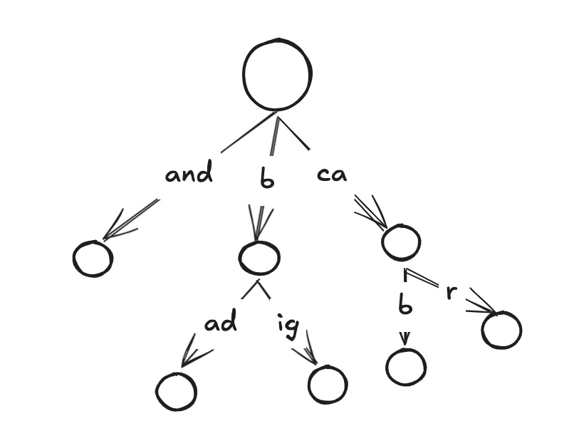

Avoiding Binary Search in Radix Trie Traversals
In a standard radix trie, which is a compressed prefix trie, edges (keys) are stored in lexographically sorted order.
When traversing the tree, following a query, say for a prefix search of "biggest", we need to identify if a matching edge exists at each stage of the trie. If our keys are lexographically sorted, we can do a binary search instead of a brute force linear search. You could imagine that under the b node there are up to 256 possible keys. Brute force can get expensive. One constant time branchless way of determining if and where a key exists I found is to keep a bitmask of key positions and use the popcount instruction to determine the proper index if it exists. (I'm sure this approach has been used before but I struggled finding it).
pub const EdgeData = packed struct(u64) {
freq_char_bitmask: u55,
num_edges: u9,
};
pub inline fn getInsertIdx(
char_freq_table: *const [256]u8,
bitmask: u64,
char: u8,
) usize {
const shift_len: usize = @intCast(char_freq_table[@intCast(char)]);
return @popCount(bitmask & FULL_MASKS[shift_len]);
}
fn getFullMasksU64(comptime T: type) [@bitSizeOf(T)]u64 {
const num_bits = @bitSizeOf(T);
var value: u64 = @as(u64, @intCast(std.math.maxInt(T))) - 1;
const overall_mask = value;
var masks: [num_bits]u64 = undefined;
for (0..num_bits) |idx| {
masks[idx] = value & overall_mask;
value <<= 1;
}
return masks;
}
This approach works as follows.
- For each edge (node's prefix) define a 64 bit struct with a 55 bit bitmask.
- Separately, for each u8 byte, define a mapping from {input_char: bitmap_idx}.
This mapping
char_freq_table: [256]u8will have 54 non-zero entries, and the others unique values [1, 55]. During insertion, we first look up the start byte in this table. If it is non-zero and returns an index, we set that bit in the bitmask. - Subsequently during traversal, we first again check the index in the
char_freq_table. If zero then we have a non-special charachter. We begin from index@popCount(bitmask)of our edges and proceed a linear search. If non-zero, we can immediately go to the correct edge index as shown in thegetInsertIdxfunction. If we define 54FULL_MASKSbitmasks according to thegetFullMasksU64function, which simply masks the most significant63 - byte_idxbits of our bitmask, we will be left only with edge indexes which could theoretically be placed earlier in our edge array than the current edge. Of those remaining, we apply a popcount to get the number of those edges which are present, and go to that index.
This will provide the correct index in only a few cycles iff the byte we are traversing over is one of the special 54 bytes we initially set aside when constructing
the char_freq_table. Therefore for this method to be effective, your input distrubution will have to be somewhat predictable.
I.e. english/latin text will likely do well, but numeric keys or say chinese text likely will not fare as well*, and will fall into the brute force linear search more often.
In my implementation, I have set as a default in order the most frequently occuring bytes in enwik9 but
also have a helper function to quickly build a frequency table over a list of keys so as to fit to the individual data distribution.
*NOTE: In theory, one could replace the 64 bit struct containing the bitmask with a 256 bit struct, then use SIMD instructions to do a popcount and get the index in constant time independent of the distribution. This would be at the cost however of having a 4x larger edge attribute and therefore considerable more memory usage. Still one could envision having two+ node types (similar to ART), where the root nodes or nodes with more edges are/become node types with this 256 bit mask, and the lower nodes with fewer edges maintain standard lexographically sorted edge arrays. I may explore this and compare with ART at some point in the future.